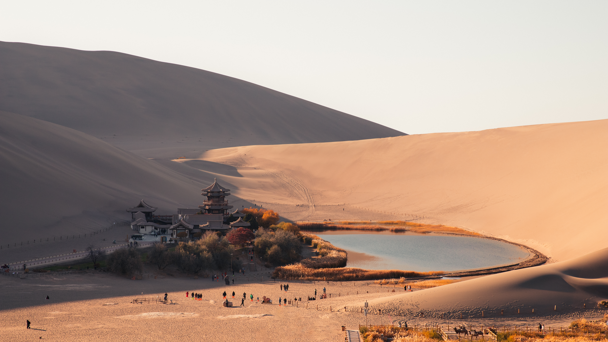
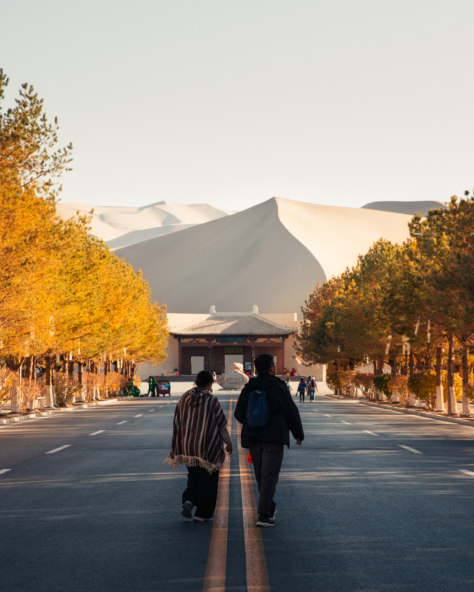
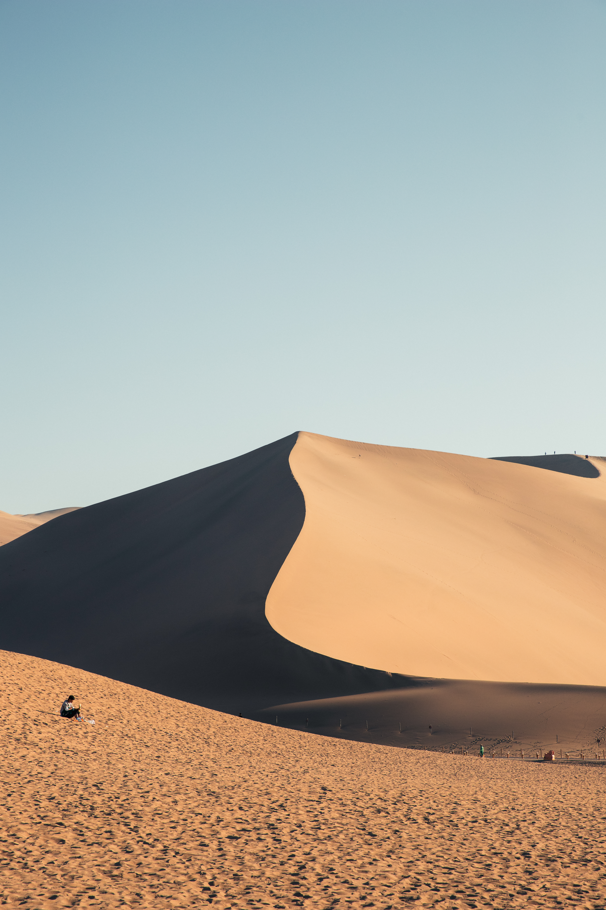
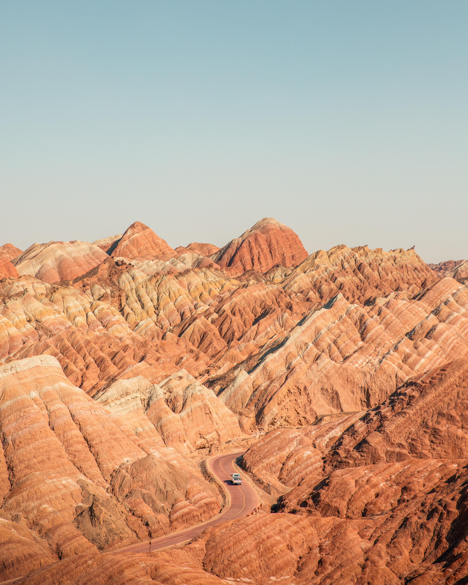
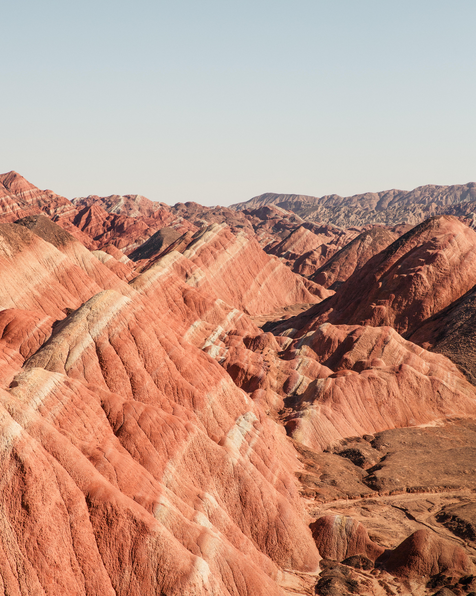
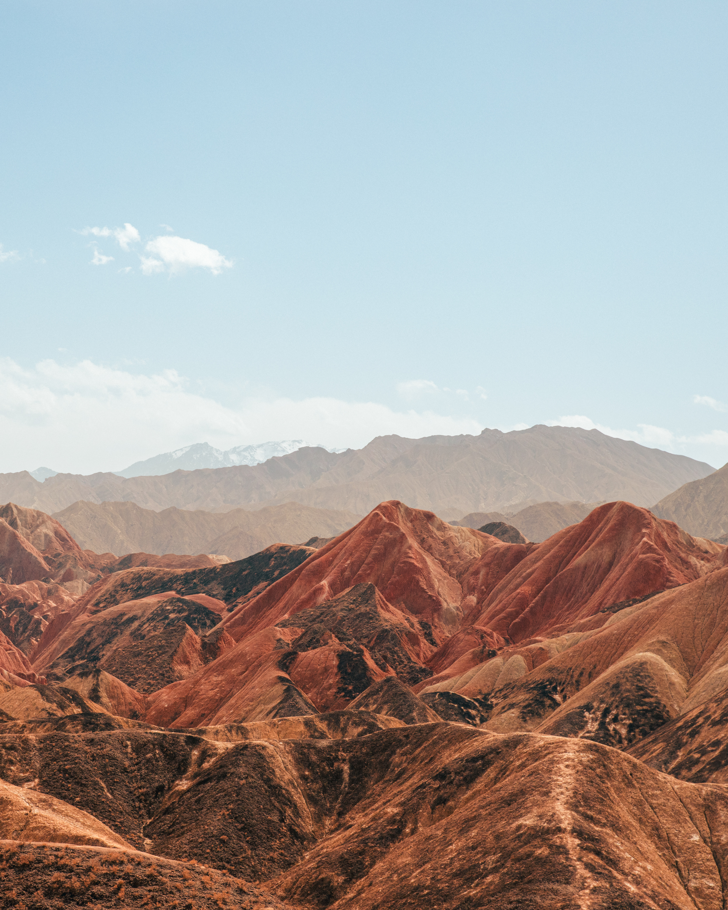
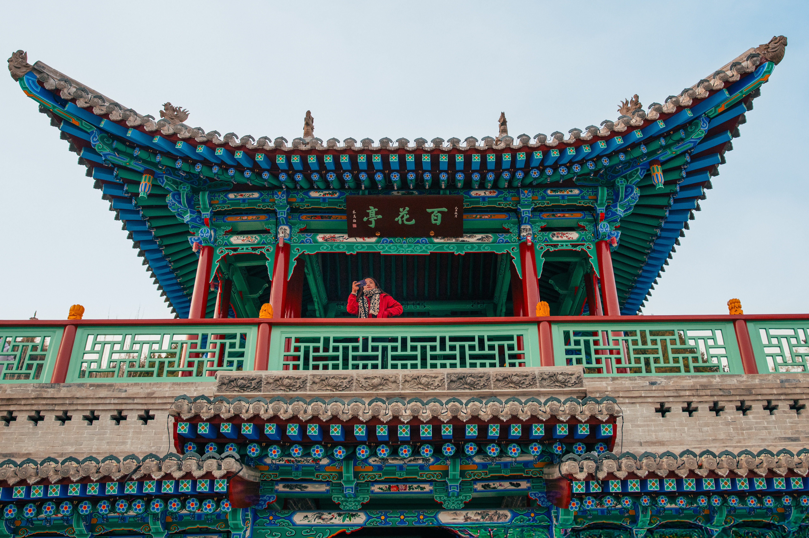

Gansu: A Province Written in Silk Roads and Sand
Gansu province is not a unified city but a corridor—a sliver of land that stretches across western China like a narrow passage between mountains and deserts. To understand Gansu is to understand the Silk Road not as a historical artifact but as a living principle: connection across distance, cultural exchange enabled by geography, commerce and culture flowing from east to west and back again. Three cities tell this story: Dunhuang at the western edge where Chinese civilization meets Central Asian influence, Zhangye in the middle ground where landscape overwhelms human settlement, and Lanzhou at the eastern threshold where trade routes converge and the region transforms into modern urbanism.
These three cities work together to reveal how a province functions as a corridor rather than a destination. Each represents a different stage of the Silk Road experience and a different layer of Gansu's character. Travel through them in sequence and you move through time as much as geography—from ancient cultural crossroads to dramatic natural landscapes to contemporary Chinese urban life.
Dunhuang: Where the Silk Road Meets the Desert
At Gansu's western edge, Dunhuang exists as a threshold city. For over two thousand years, this oasis town marked the boundary of Chinese civilization. Beyond it lay the desert and Central Asia. Merchants paused here to collect supplies, information, and courage before crossing the Taklamakan—one of the world's harshest deserts. The city accumulated not just goods but cultures: Silk Road traders, Buddhist monks, military officials, artisans bringing techniques from Persia and India.
The Mogao Caves, carved into cliffs at the desert's edge, represent the spiritual heart of this exchange. Thousands of Buddhist cave temples stretch across the rock face, filled with sculptures, paintings, and manuscripts that document a thousand years of artistic evolution. Each cave tells a story of a merchant, monk, or artist who invested resources into creating a space of spiritual refuge or artistic expression. Walking the caves, you see how Buddhism transformed as it moved along the Silk Road—adopted and adapted by Chinese artists, the visual language becoming increasingly Chinese while the spiritual core remained Buddhist.
Modern Dunhuang is a smaller city, but it retains the character of a place that once mattered to the world's commerce. The streets still feel like a meeting point, even as the caravans are gone. The Gobi Desert extends in every direction, and the oasis itself feels fragile, improbable—a green pocket of life maintained through water management and determination. This precariousness is part of Dunhuang's charm. The city exists because people chose to make it exist.



Zhangye: The Dramatic Middle Ground
Moving east from Dunhuang, the landscape transforms. The stark desert gives way to something equally dramatic but entirely different: the Zhangye Danxia—striped mountains of impossible colors created by mineral deposits oxidizing over millions of years. Red, yellow, purple, and green layers stack atop each other, visible only from specific vantage points where the scale becomes comprehensible. This is geology as spectacle, the earth revealing its history in color and striations.
Zhangye sits not as a major city but as a base for experiencing this landscape. The Gobi Desert still surrounds it, but here the geography asserts itself more dramatically than any human settlement can. The landscape is the dominant feature—humans are present but secondary. This middle section of Gansu represents the transition between Dunhuang's desert oasis character and Lanzhou's urban transformation. Zhangye is the place where you stop to observe the land itself, where Gansu's geology becomes the narrative.
The city serves as both gateway and staging point for deeper exploration of Gansu's natural wonders. Visitors come to witness the Danxia landscape, to experience the scale of the Gobi, to understand that western China's beauty often comes from what appears hostile to human habitation. The colored mountains are beautiful precisely because they are inhospitable, because they represent millions of years of natural processes indifferent to human purposes.



Lanzhou: The Convergence Point and Modern Hub
By the time you reach Lanzhou, you have crossed from margin to center. This city of three million sits at the convergence of trade routes and political power. The Yellow River flows through it, and the city spreads across the river valleys in a way that feels purposeful and urbanely dense. Lanzhou is where Gansu's provincial government sits, where infrastructure converges, where modern China becomes visible after the oases and deserts of the west.
Walking Lanzhou reveals a city in transformation. Modern shopping centers stand near older neighborhoods. High-speed rail connects it to Beijing and other major hubs. Manufacturing and commercial districts cluster in efficient zones. The city feels like a contemporary Chinese urban center that happens to sit at the western end of China's interior. This is the hub where the Silk Road's historical significance becomes economic reality—goods still flow through Lanzhou, though now via container ships and high-speed trains rather than camel caravans.
Lanzhou also represents Gansu's modern identity: not as historical artifact but as functioning province with contemporary concerns. The Yellow River's dramatic gorge winds through the city, creating natural drama within an urban setting. Lanzhou people are pragmatic, forward-looking, focused on the city's role as regional center rather than its historical significance. This pragmatism is partly what makes Lanzhou distinct—it refuses to be reduced to a Silk Road symbol. It is simply a city doing the work of a city.

How They Work Together: Reading Gansu as a Corridor
Gansu makes sense only when you understand it as a system rather than as individual cities. Dunhuang is the threshold—the place where you understand Gansu's historical significance and the harsh geography that made the Silk Road necessary. Zhangye is the landscape—the place where Gansu's natural drama becomes apparent and where you comprehend the scale of western China. Lanzhou is the conclusion—the place where history becomes infrastructure, where the Silk Road's legacy manifests as modern commerce and urban function.
Traveling through all three in sequence creates a narrative arc. You move from peripheral to central, from historical to contemporary, from extreme landscape to urban complexity. Each city prepares you for the next. Dunhuang's isolation makes Zhangye's dramatic geology comprehensible. Zhangye's scale makes Lanzhou's urban density feel appropriate and necessary. Lanzhou's modernity retroactively clarifies what Dunhuang represented—not a quaint historical site but a crucial node in a functioning system of exchange and communication.
This is Gansu's true character: not as a single place but as a passage. The province exists because it connects east to west, because its geography forces this corridor to be the route. Its cities function as stages in that larger narrative. Understanding Gansu requires accepting this role—not as limitation but as the source of the region's distinctive identity and historical importance.